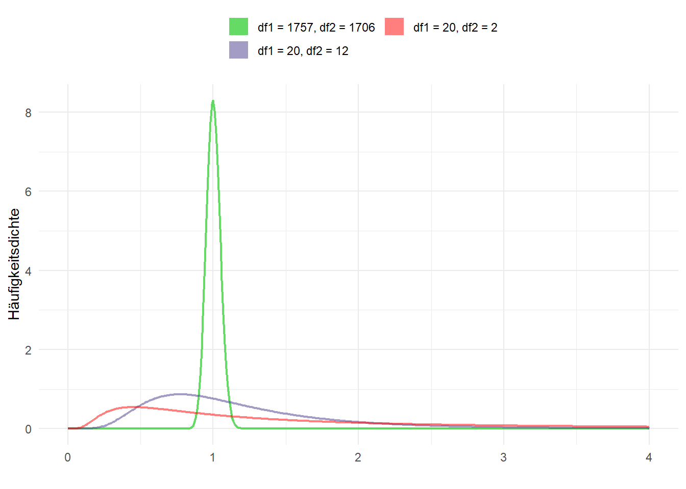
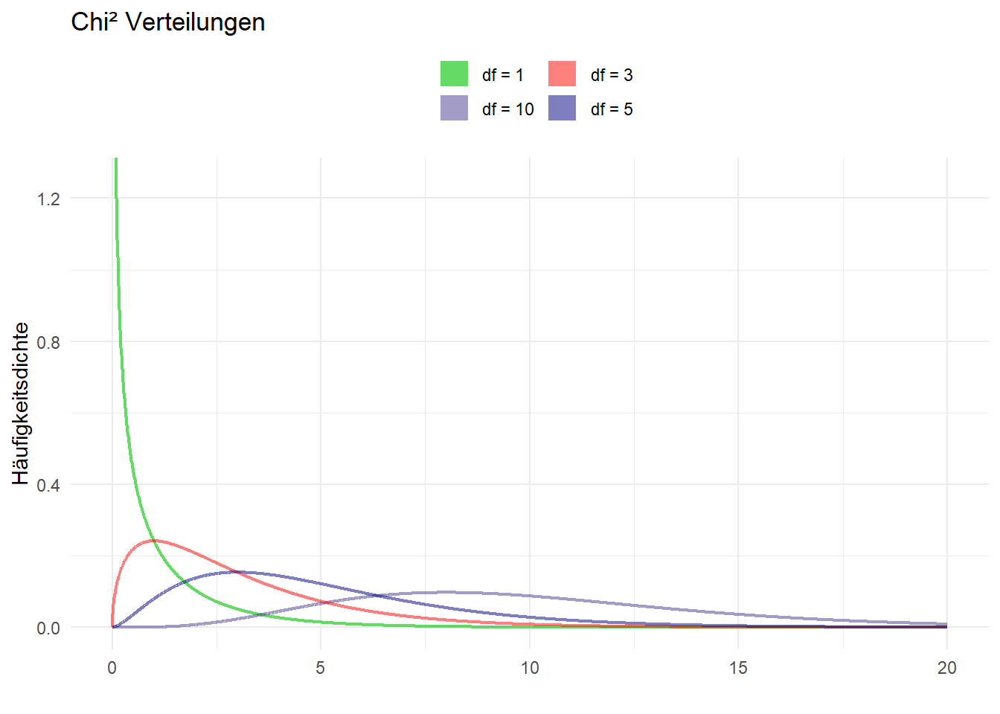

9 Weitere Hypothesentests
9.1 Vergleich von Varianzen mit dem F-Test
Um die Varianzen zweier Stichproben zu überprüfen, steht uns der F-Test zur Verfügung - in Stata mit sdtest. Getestet wird beim F-Test die Hypothese, dass die Varianzen zweier Grundgesamtheiten gleich oder ungleich (zweiseitiger Test) sind bzw. dass die Varianz der einen Grundgesamtheit größer ist als die der anderen (einseitiger Test).
Der F-Test hat einige Voraussetzungen:
- Die Variablen sind (mind.) intervallskaliert
- Die Variablen sind in der Grundgesamtheit (annähernd) normalverteilt
- Die zu vergleichenden Gruppen sind voneinander unabhängig (unverbundene Stichproben)
Es gibt also auch hier wieder gerichtete und ungerichtete Hypothesen. Da allerdings die F-Verteilung nicht symmetrisch ist, wird nur rechtsseitig getestet. Daher sollte beim Test die größere Varianz immer im Zähler stehen.
- ungerichtete/beidseitige Hypothese:
\(\qquad H_0: \frac{\sigma^{2}_{1}}{\sigma^{2}_{2}} = 1 \qquad H_A: \frac{\sigma^{2}_{1}}{\sigma^{2}_{2}} \neq 1 \qquad \qquad \Rightarrow H_A:\;\sigma^{2}_{1} \neq \sigma^{2}_{2}\)
- rechtsseitige Hypothese:
\(\qquad H_0: \frac{\sigma^{2}_{1}}{\sigma^{2}_{2}} \leqslant 1 \qquad H_A: \frac{\sigma^{2}_{1}}{\sigma^{2}_{2}} > 1 \qquad \qquad \Rightarrow H_A:\;\sigma^{2}_{1}>\sigma^{2}_{2}\)
Wie schon beim t-Test geht es bei den Hypothesen um die Grundgesamtheit. Daher wird hier der griechische Buchstabe für die Varianz, \(\sigma^2\), verwendet. Da wir i.d.R. keine Angabe zur Varianz der Grundgesamtheiten vorliegen haben, wird beim F-Test auf die Stichprobenvarianzen (\(s^2\)) zurückgegriffen. Der Quotient der Varianzen ist F-verteilt. Somit berechnet sich die F-Statistik aus dem Quotienten der beiden Stichprobenvarianzen, wobei – nochmal – die größere Varianz im Zähler steht: \[F = \frac{s^{2}_{1}}{s^{2}_{2}}\] Wir kommen nochmal auf das Beispiel der Körpergrößen aus dem Allbus 2014 aus Session 8 zurück und fragen uns, ob die Varianz der Körpergröße sich bei Männern und Frauen unterscheidet:
Im konkreten Fall ist also \(s^{2}_{Maenner}\) der Schätzer für \(\sigma^{2}_{Manner}\) und \(s^{2}_{Frauen}\) der Schätzer für die \(\sigma^{2}_{Frauen}\). Wir berechnen also zunächst die Stichprobenvarianzen:
Summary for variables: hs16
by categories of: sex (GESCHLECHT, BEFRAGTE(R))
sex | variance cv
-------+--------------------
MANN | 51.55268 .0401752
FRAU | 42.40775 .0392561
-------+--------------------
Total | 88.18758 .054472
----------------------------Wir haben Glück - die Gruppe mit der größeren Stichprobenvarianz hat auch den kleineren Zahlenwert zugewiesen (Männer haben bei sex die 1). Wir können also sdtest ohne Umwege anwenden.1
In sdtest() geben wir zunächst die zu testende Variable an, dann die Gruppierungsvariable:
Variance ratio test
------------------------------------------------------------------------------
Group | Obs Mean Std. Err. Std. Dev. [95% Conf. Interval]
---------+--------------------------------------------------------------------
MANN | 1758 178.7179 .1712443 7.18002 178.382 179.0537
FRAU | 1707 165.8881 .157618 6.512124 165.579 166.1973
---------+--------------------------------------------------------------------
combined | 3465 172.3974 .1595336 9.390824 172.0846 172.7102
------------------------------------------------------------------------------
ratio = sd(MANN) / sd(FRAU) f = 1.2156
Ho: ratio = 1 degrees of freedom = 1757, 1706
Ha: ratio < 1 Ha: ratio != 1 Ha: ratio > 1
Pr(F < f) = 1.0000 2*Pr(F > f) = 0.0000 Pr(F > f) = 0.0000Da der p-Wert für den beidseitigen Test (mittlere Spalte, unter Ha: ratio != 1) deutlich unter 0,05 liegt wird die \(H_0\) verworfen und wir gehen von ungleichen Varianzen bei den Körpergrößen von Männern und Frauen aus.
Außerdem kann die \(H_0: \frac{\sigma^{2}_{1}}{\sigma^{2}_{2}} \leqslant 1\) verworfen werden (letzte Spalte, unter Ha: ratio > 1). D.h. die Varianz der Körpergröße von Männern ist signifikant größer als die Varianz der Körpergröße bei Frauen.

9.2 Proportionen und Häufigkeiten
9.2.1 Binomialtest
Für dichtome abhängige Variablen eignet sich der Binomialtest. Wir können mit dem Binomialtest testen, ob ein Anteil eines Merkmals sich signifikant von einem Wert unterscheidet. Dieser Anteil wird als \(\pi\) bezeichnet und beschreibt Auftrittswahrscheinlichkeit des interessierenden Merkmals in der Grundgesamtheit. In R können wir den Binomialtest mit binom.test aufrufen.
Auch hier gibt es wieder gerichtete und ungerichtete Hypothesen:
ungerichtete/beidseitige Hypothese: \(H_0: \pi = p \qquad H_A: \pi \neq p\)
linksseitige Hypothese:
\(H_0: \pi \geqslant p \qquad H_A: \pi < p\)rechtssseitige Hypothese:
\(H_0: \pi \leqslant p \qquad H_A: \pi > p\)
Wir könnten uns zB. fragen ob der Anteil der Befragten ohne Haustier im Allbus 2014 sich von \(67\%\) unterscheidet. Dazu wählen wir zunächst alle Befragten des Allbus 2014 aus, welche die Frage nach den Haustieren (aq03) beantwortet haben (aq < 0 sind missings, daher verwenden wir schlicht aq03 > 0). Dazu erstellen wir aus aq03 noch eine Dummyvariable, welche 1 für das interessierende Merkmal (kein Haustierbesitz) und 0 in allen anderen Fällen annimmt:
cd ""
use "Allbus_1980-2018.dta",clear
keep if year == 2014 & aq03>0
gen pet = (aq03 == 4)
tab aq03 pet HUND ODER KATZE | pet
IM HAUSHALT? | 0 1 | Total
-----------------+----------------------+----------
HUND | 397 0 | 397
KATZE | 569 0 | 569
BEIDES | 127 0 | 127
KEINS VON BEIDEN | 0 2,374 | 2,374
-----------------+----------------------+----------
Total | 1,093 2,374 | 3,467 Mit bitest können wir dann den Binomialtest durchführen, dazu geben wir neben der Variable pet den zu testenden Wert als Dezimalwert an. Stata interpretiert dabei die Ausprägung 1 als “Treffer” und 0 als “Nicht-Treffer”, daher haben wir eben die interessierende Ausprägung (kein Haustier) als 1 in pet definiert.
Variable | N Observed k Expected k Assumed p Observed p
-------------+------------------------------------------------------------
pet | 3467 2374 2322.89 0.67000 0.68474
Pr(k >= 2374) = 0.033408 (one-sided test)
Pr(k <= 2374) = 0.969210 (one-sided test)
Pr(k <= 2271 or k >= 2374) = 0.065472 (two-sided test)Der rechtsseitige Test (erste Zeile) ergibt, dass der Anteil der Befragten ohne Haustier signifikant größer als 67% ist. Der linksseitige Test (zweite Zeile) ergibt, dass der Anteil der Befragten ohne Haustier nicht signifikant kleiner als 67% ist. Außerdem können wir auf Basis des beidseitigen Tests (letzte Zeile) die \(H_0: \pi = .67\) nicht verwerfen, da der p-Wert größer 0,05 ist. Der Anteil der Befragten ohne Haustier unterscheidet sich also nicht signifikant von 67%.
9.2.2 Chi²-Test
Häufig ist aber auch für dichtome Merkmale von Interesse, ob sich die Auftrittswahrscheinlichkeit zwischen zwei Gruppen unterscheidet. Hierfür eignet sich der \(\chi^{2}\)-Test. Der \(\chi^{2}\)-Test testet, ob sich die beobachteten absoluten Häufigkeiten signifikant von den absoluten Häufigkeiten unterscheiden, die wir erwarten würden wenn beide Merkmale unabhängig voneinander sind. Die Differenz zwischen der beobachteten und der erwarteten absoluten Häufigkeit ergibt den \(\chi^{2}\)-Wert. Ist \(\chi^{2} \approx 0\), dann können wir davon ausgehen, dass die beiden Merkmale unabhängig voneinander sind. Ist \(\chi^{2}\) aber größer Null, so gehen wir von einem Zusammenhang aus. Beim \(\chi^{2}\)-Test geht die \(H_0\) davon aus, dass es keinen Zusammenhang gibt. Die \(H_{A}\) besagt hingegen, dass einen Zusammenhang zwischen den beiden untersuchten Merkmalen besteht.
\(H_{0}: \chi^2 = 0 \qquad H_A: \chi^2 > 0\)
Den \(\chi^2\)-Test erhalten wir, indem wir mit tabulate eine Kontingenztabelle erstellen und die Option chi angeben. Beispielsweise könnten wir untersuchen, ob es einen Zusammenhang zwischen dem Geschlecht der Befragten und dem Haustierbesitz gibt:
HUND ODER KATZE | pet
IM HAUSHALT? | 0 1 | Total
-----------------+----------------------+----------
HUND | 397 0 | 397
KATZE | 569 0 | 569
BEIDES | 127 0 | 127
KEINS VON BEIDEN | 0 2,374 | 2,374
-----------------+----------------------+----------
Total | 1,093 2,374 | 3,467
Pearson chi2(3) = 3.5e+03 Pr = 0.000Da der p-Wert deutlich unter 0,05 liegt, können wir davon ausgehen, dass es in der Grundgesamtheit einen Zusammenhang zwischen dem Geschlecht der Befragten und dem Haustierbesitz gibt.

9.3 Überblick
In allen Tests (außer \(\chi^2\)) können beidseitige, linksseitige oder rechtsseitige Hypothesen untersucht werden.
Mittelwertvergleich:
ttest- Vergleich zu einem Referenzwert:
ttest testvariable == referenzwert
Zudem gibt es bein Mittelwertvergleichen insgesamt zwei Aspekte, anhand derer sich t-Tests allgemein unterscheiden:
- Die Varianz der Messwerte in den verglichenen Gruppen ist …
- gleich: \(\Rightarrow\)
ttest testvariable, by(gruppenvariable) - verschieden: \(\Rightarrow\)
ttest testvariable, by(gruppenvariable) unequal
- gleich: \(\Rightarrow\)
- Verbundene oder unverbundene Stichprobe?
- Sind die einzelnen Messwerte voneinander unabhängig? D.h. ein Messwert steht in keinem direkten Zusammenhang mit einem anderen \(\Rightarrow\)
ttest testvariable, by(gruppenvariable)für eine unverbundene Stichprobe (mit ggf.unequal) - Stehen die einzelnen Messwerte in einem Zusammenhang? D.h. ein Messwert steht in einem direkten Zusammenhang mit einem anderen \(\Rightarrow\) Werte für beide Variablen sollten “nebeneinander” abgelegt sein (wide-Format), dann kann mit
ttest vorher==nachherein verbundenerttestdurchgeführt werden.
- Sind die einzelnen Messwerte voneinander unabhängig? D.h. ein Messwert steht in keinem direkten Zusammenhang mit einem anderen \(\Rightarrow\)
- Vergleich zu einem Referenzwert:
Varianzvergleich,unterscheidet sich die Varianz zwischen zwei Gruppen?
sdtest testvariable, by(gruppenvariable)
Anteile vergleichen:
- mit einem behaupteten Wert:
bitest testvariable == referenzwert
- zwischen Gruppen: Kreuztabelle erstellen und mit
tab var1 var2, chiUnabhängigkeit testen
- mit einem behaupteten Wert:
9.4 Signifikanz in Regressionen
Wir hatten uns in Session 5 u.a. Regressionsmodelle angesehen:
cd D:\oCloud\Home-Cloud\Lehre\Methodenseminar
use "Allbus_1980-2018.dta", clear
keep if year == 2014
mvdecode lm02 age, mv(-32/-1)
reg lm02 age Source | SS df MS Number of obs = 3363
-------------+------------------------------ F( 1, 3361) = 176.96
Model | 1389413.03 1 1389413.03 Prob > F = 0.0000
Residual | 26388575.7 3361 7851.40605 R-squared = 0.0500
-------------+------------------------------ Adj R-squared = 0.0497
Total | 27777988.8 3362 8262.34051 Root MSE = 88.608
------------------------------------------------------------------------------
lm02 | Coef. Std. Err. t P>|t| [95% Conf. Interval]
-------------+----------------------------------------------------------------
age | 1.16511 .0875841 13.30 0.000 .9933869 1.336834
_cons | 95.58535 4.611489 20.73 0.000 86.54374 104.627
------------------------------------------------------------------------------In der Spalte P>|t| und t sehen wir die Ergebnisse eines t-Tests für die jeweiligen Koeffizienten. Hier wird der Koeffizient (sprich: die Steigung der Geraden) “gegen Null” getestet. Ist der Zusammenhang zwischen dem Alter der Befragten und ihrem Fernsehkonsum in der Population nicht eigentlich 0?
\[H_0:\, \mu_{Koeff(age)} = 0 \qquad H_A: \mu_{Koeff(age)} \neq 0\]
Was hier also gemacht wird, ist ein t-Test für 1.16511 vs. \(\mu=0\). Unter P>|t| erkennen wir hier aber, dass die Irrtumswahrscheinlichkeit für die Ablehnung der \(H_0\) deutlich kleiner als 0,05 ist. Dementsprechend lehnen wir die Nullhypothese ab (wonach der Zusammenhang = 0 ist) und sprechen von einen statistisch signifikanten Zusammenhang.
9.5 Übungen 9
9.5.1 Übung 9-1
- Haben die Einkommensangaben von Mönnern eine höhere Varianz als die Einkommensangaben von Frauen?
- Laden Sie den Allbus (
Allbus_2018.dta) und wählen Sie alle Angaben für in Vollzeit arbeitende Befragte (work==1) aus, die ein Einkommen (inc) größer als 0 angebeben haben. - Denken Sie daran, die Missings mit
.zu überschreiben! - Vergleichen Sie die Angaben des logarithmierten Einkommens der Befragten (
gen log_inc = log(inc)) - durch die Logarithmierung werden die Einkommensangaben der NV angenähert. Die grundsätzliche Interpretation bleibt aber bestehen (höhereslog_incbedeutet auch höheresinc). - Wie lauten die Hypothesen für einen rechtsseitigen Test?
- Vergleichen Sie die Varianz der (logarithmierten) Einkommensangaben in beiden Gruppen mit
sdtest! - Wie lautet Ihre Entscheidung hinsichtlich der Hypothesen?
9.5.2 Übung 9-2
- Waren im Jahr 2018 mehr als 4% der deutschen Bevölkerung Mitglied einer nicht-christlichen Glaubensgemeinschaft?
- Laden Sie den Allbus (
Allbus_2018.dta). - Wählen Sie alle Angaben aus, für welche die Konfession der Befragten vorliegt (
rd01 > 0). - Erstellen Sie eine Dummyvariable, welche
1ist wenn die Befragten einer nicht-christlichen Glaubensgemeinschaft angehören und0wenn sie einer christlichen oder keiner Glaubensgemeinschaft angehören (Hinweise) - Welcher Test ist hier der passende?
- Formulieren Sie die Hypothesen
- Führen Sie den Test durch
- Wie lautet Ihre Entscheidung hinsichtlich der Hypothesen?
9.5.3 Übung 9-3
- Führen Sie eine ANOVA-Analyse des Vertrauens in staatliche Institutionen durch!
- Nutzen Sie die unten aufgeführten Befehle, um einen gemeinsamen Indikator für Institutionenvertrauen zu erstellen!
- Erklärung: Sehen Sie sich mit
browse pt01 pt02 pt03 pt04 pt08 pt12 pt14 trustdas Ergebnis an -trustist jeweils der Mittelwert über diept*-Variablen. - Können Sie Ost-West-Unterschiede beim Vertrauen in feststellen? Führen Sie eine ANOVA durch!
- Nutzen Sie die
eastwestals kategoriale Variable. - Führen Sie auch einen
ttestund eine Regression durch - erkennen Sie die parallelen der Werte aus allen drei Modellen? - Nutzen Sie die Anleitung aus Kapitel 8.9, um die Differenzen zu visualisieren!
9.6 ANOVA
ANOVA steht für analysis of variance und wird auch als univariate Varianzanalyse bezeichnet.
ANOVA wird verwendet, um Mittelwertunterschiede zwischen 2 oder mehr Gruppen zu vergleichen. Dies geschieht, indem die Varianz in den Daten betrachtet wird (daher der Name). Insbesondere vergleicht ANOVA das Ausmaß der Variation zwischen den Gruppen (between variance) mit dem Ausmaß der Variation innerhalb der Gruppen (within variance). Wir hatten diese Logik der Varianzzerlegung schon bei Regressionsmodellen kennengelernt:

Hier hatten wir die Gesamtvarianz in erklärte und unerklärte Varianz zerlegt. Diese Sum of Squares bezeichnet Stata Model und Residual:
Source | SS df MS Number of obs = 4
-------------+------------------------------ F( 1, 2) = 11.07
Model | 12.4932432 1 12.4932432 Prob > F = 0.0797
Residual | 2.25675676 2 1.12837838 R-squared = 0.8470
-------------+------------------------------ Adj R-squared = 0.7705
Total | 14.75 3 4.91666667 Root MSE = 1.0623
------------------------------------------------------------------------------
var2 | Coef. Std. Err. t P>|t| [95% Conf. Interval]
-------------+----------------------------------------------------------------
var1 | .5810811 .1746331 3.33 0.080 -.1703044 1.332467
_cons | 2.135135 .9485004 2.25 0.153 -1.945933 6.216203
------------------------------------------------------------------------------Diese Logik überträgt ANOVA auf kategoriale Variablen, indem hier die Varianz in eine Streuung zwischen (between) und innerhalb der (within) der Gruppen aufgeteilt wird:

Aus diesen beiden Streuungen berechnen wir wieder Sum of squares, welche dann ins Verhältnis gesetzt werden, um den sog. F-Wertb zu berechnen:
\[F=\frac{\textbf{between}\;\texttt{Sum of Squares}}{\textbf{within}\;\texttt{Sum of Squares}}\]
Wenn der durchschnittliche Unterschied zwischen den Gruppen ähnlich ist wie innerhalb der Gruppen, beträgt das F-Verhältnis etwa 1. Wenn der durchschnittliche Unterschied zwischen den Gruppen größer wird als der innerhalb der Gruppen, wird das F-Verhältnis größer als 1. Um einen P-Wert zu erhalten, kann er gegen die F-Verteilung einer Zufallsvariablen mit den mit dem Zähler und Nenner des Verhältnisses verbundenen Freiheitsgraden getestet werden (ähnlich wie beim F-Test oben). Der P-Wert ist die Wahrscheinlichkeit, dieses oder ein größeres F-Verhältnis zu erhalten. Größere F-Verhältnisse ergeben kleinere P-Werte.
Mit oneway inc sex, tabulate bekommen wir bspw. die Varianzzerlegung der Einkommensangaben nach Geschlechtern:
| Summary of
| BFR.:NETTOEINKOMMEN(OFFENE+LISTENAN
GESCHLECHT, | GABE)
BEFRAGTE(R) | Mean Std. Dev. Freq.
------------+------------------------------------
MANN | 2214.3536 1519.8463 1612
FRAU | 1403.8951 887.64216 1477
------------+------------------------------------
Total | 1826.8343 1321.2263 3089
Analysis of Variance
Source SS df MS F Prob > F
------------------------------------------------------------------------
Between groups 506278204 1 506278204 319.98 0.0000
Within groups 4.8843e+09 3087 1582201.17
------------------------------------------------------------------------
Total 5.3905e+09 3088 1745638.99
Bartlett's test for equal variances: chi2(1) = 419.3118 Prob>chi2 = 0.000Die deskriptive Zusammenfassung oben liefert einige Deskriptionen: das arith. Mittel (Mean), die Standardabweichung (Std. Dev.) und die Stichprobengrößen (Freq.) für die abhängige Variable (Einkommen in unserem Beispiel) für jede Gruppe der unabhängigen Variable sex (also Frauen und Männer) sowie wenn alle Gruppen kombiniert werden (Total).
Die Stata-Ausgabe der einseitige ANOVA findet sich in der unteren Tabelle und zeigt an, ob wir einen statistisch signifikanten Unterschied zwischen unseren beiden Gruppenmittelwerten haben. Das Verhältnis von between und within wird unter F angegeben. Wir können sehen, dass das Signifikanzniveau Prob > F deutlich unter 0,05 liegt. Das legt einen statistisch signifikanten Unterschied im mittleren Einkommen den beiden Gruppen nahe.
Außerdem werden uns die Sum of Squares für die Unterschiede innerhalb und zwischen den Gruppen angezeigt. Wir sehen hier, dass die Varianz innerhalb der Gruppen die Gruppendifferenz deutlich übersteigt: die Sum of Squares zwischen den Gruppen sind mit 506278204 deutlich geringer als die Within-group SS 4.8843e+09. (4.8843e+09 steht für 4884300000, also 4.883 “mit dem Komma um 9 Stellen nach rechts verschoben”). Wir können aus den Zahlen für die Sum of Squares auch die Varianzaufklärung durch die Variable sex berechnen (between/Total):
.09392045Durch Kenntnis der Varibale sex können also 9.39% der gesamten Varianz (“Unterschiede”) des Einkommens erklärt werden.
9.6.1 ANOVA vs. t-Tests
Der t-Test wird beim Vergleich zweier Gruppen verwendet, während die ANOVA für den Vergleich von mehr als 2 Gruppen verwendet wird. Wenn wir den p-Wert unter Verwendung der ANOVA für 2 Gruppen berechnen, erhalten wir die gleichen Ergebnisse wie beim t-Test - hier also einen signifikanten Gruppenunterschied:
Two-sample t test with equal variances
------------------------------------------------------------------------------
Group | Obs Mean Std. Err. Std. Dev. [95% Conf. Interval]
---------+--------------------------------------------------------------------
MANN | 1612 2214.354 37.85447 1519.846 2140.104 2288.603
FRAU | 1477 1403.895 23.09658 887.6422 1358.589 1449.201
---------+--------------------------------------------------------------------
combined | 3089 1826.834 23.77214 1321.226 1780.223 1873.445
---------+--------------------------------------------------------------------
diff | 810.4585 45.30718 721.6233 899.2938
------------------------------------------------------------------------------
diff = mean(MANN) - mean(FRAU) t = 17.8881
Ho: diff = 0 degrees of freedom = 3087
Ha: diff < 0 Ha: diff != 0 Ha: diff > 0
Pr(T < t) = 1.0000 Pr(|T| > |t|) = 0.0000 Pr(T > t) = 0.00009.6.2 ANOVA vs. lineare Regression
Die lineare Regression wird zur Analyse kontinuierlicher Beziehungen verwendet; die Regression ist jedoch im Wesentlichen die gleiche wie die ANOVA. Bei der ANOVA berechnen wir Mittelwerte und Abweichungen unserer Daten von den Mittelwerten. Bei der linearen Regression berechnen wir die beste Linie durch die Daten und berechnen die Abweichungen der Daten von dieser Linie. Stata gibt uns das F-Verhältnis bei Regressionsmodellen direkt mit aus. Zu beachten ist aber hier, dass wir für eine kategoriale unabhängige Variable i. voranstellen müssen:
(388 observations deleted)
Source | SS df MS Number of obs = 3089
-------------+------------------------------ F( 1, 3087) = 319.98
Model | 506278204 1 506278204 Prob > F = 0.0000
Residual | 4.8843e+09 3087 1582201.17 R-squared = 0.0939
-------------+------------------------------ Adj R-squared = 0.0936
Total | 5.3905e+09 3088 1745638.99 Root MSE = 1257.9
------------------------------------------------------------------------------
inc | Coef. Std. Err. t P>|t| [95% Conf. Interval]
-------------+----------------------------------------------------------------
sex |
FRAU | -810.4585 45.30718 -17.89 0.000 -899.2938 -721.6233
_cons | 2214.354 31.32913 70.68 0.000 2152.926 2275.782
------------------------------------------------------------------------------- die obere Tabelle entspricht dem Output von
oneway:- die Sum of Squares innerhalb von
sexbetragen506278204, zwischensexist die Sum of Squares (4.8843e+09) - Das Verhältnis der within und between Streuung beträgt
F(1, 3087) = 319.98(siehe SpalteFinoneway) - die Variable
sexkann 9,38% der Streuung der Einkommen erklären (R-squared = 0.0938), siehe unsere Berechnung oben
- die Sum of Squares innerhalb von
- die untere Tabelle entspricht dem
ttest:- Frauen verdienen im Mittel
806.5515weniger als Männer und dieser Unterschied ist statistisch signifikant (vgl.diffbeittest)
- Frauen verdienen im Mittel
9.7 ANOVA mehrere Gruppen
Der Vorteil von ANOVA ist aber, dass sich auch Gruppenunterschiede für Variablen mit mehr als zwei Ausprägungen untersuchen lassen, bspw. Schulbildungsniveaus:

| Summary of
ALLGEMEINER | BFR.:NETTOEINKOMMEN(OFFENE+LISTENAN
SCHULABSCHL | GABE)
USS | Mean Std. Dev. Freq.
------------+------------------------------------
OHNE ABSC | 1066.0244 836.64603 41
VOLKS-,HA | 1413.4075 946.82151 724
MITTLERE | 1610.9124 912.21029 1073
FACHHOCHS | 2165.1172 1373.9449 273
HOCHSCHUL | 2336.9612 1714.1057 954
ANDERER A | 1415.3125 964.18503 16
NOCH SCHU | 548.125 544.93733 8
------------+------------------------------------
Total | 1826.8343 1321.2263 3089
Analysis of Variance
Source SS df MS F Prob > F
------------------------------------------------------------------------
Between groups 492795287 6 82132547.9 51.68 0.0000
Within groups 4.8977e+09 3082 1589142.74
------------------------------------------------------------------------
Total 5.3905e+09 3088 1745638.99
Bartlett's test for equal variances: chi2(6) = 520.5203 Prob>chi2 = 0.000Wir erkennen:
- dass signifikante Gruppenunterschiede bestehen:
Prob > Fist deutlich < 0,05 - Kenntnis von
educkann - dass Befragte mit Hochschulreife die höchsten Durchschnittseinkommen haben (
Mean= 2336.9612), Schüler*innen die niedrigsten (Mean= 548.125) usw.
Auch hier der Vergleich zu Regressionsmodellen einer kategorialen UV:
Source | SS df MS Number of obs = 3089
-------------+------------------------------ F( 6, 3082) = 51.68
Model | 492795287 6 82132547.9 Prob > F = 0.0000
Residual | 4.8977e+09 3082 1589142.74 R-squared = 0.0914
-------------+------------------------------ Adj R-squared = 0.0896
Total | 5.3905e+09 3088 1745638.99 Root MSE = 1260.6
-------------------------------------------------------------------------------------
inc | Coef. Std. Err. t P>|t| [95% Conf. Interval]
--------------------+----------------------------------------------------------------
educ |
VOLKS-,HAUPTSCHULE | 347.3831 202.3723 1.72 0.086 -49.41508 744.1812
MITTLERE REIFE | 544.888 200.6006 2.72 0.007 151.5636 938.2125
FACHHOCHSCHULREIFE | 1099.093 211.1412 5.21 0.000 685.1011 1513.085
HOCHSCHULREIFE | 1270.937 201.0606 6.32 0.000 876.7106 1665.163
ANDERER ABSCHLUSS | 349.2881 371.5925 0.94 0.347 -379.306 1077.882
NOCH SCHUELER | -517.8994 487.2396 -1.06 0.288 -1473.247 437.4478
|
_cons | 1066.024 196.8745 5.41 0.000 680.0058 1452.043
-------------------------------------------------------------------------------------\(\rightarrow\) hier sind die Koeffizienten jeweils auf den Vergleich zu educ=1 zu interpretieren:
- Befragte mit VOLKS-,HAUPTSCHULE verdienen im Schnitt 347.3831 EUR mehr als Befragte ohne Abschluss (
educ = 1). Der Unterschied ist aber nicht statistisch signifikant (P>|t|> 0,05). - Befragte mit MITTLERE REIFE verdienen im Schnitt 544.888 EUR mehr als Befragte ohne Abschluss (
educ = 1). Der Unterschied ist statistisch signifikant (P>|t|< 0,05). - Befragte mit FACHHOCHSCHULREIFE verdienen im Schnitt 1099.093 EUR mehr als Befragte ohne Abschluss (
educ = 1). Der Unterschied ist statistisch signifikant (P>|t|< 0,05). - Befragte, die noch zur Schule gehen, verdienen im Schnitt 517.8994 EUR weniger als Befragte ohne Abschluss (
educ = 1). Der Unterschied ist statistisch signifikant (P>|t|< 0,05).
Wir können die Referenzgruppe mit ib3. auf Realschulabsolvent*innen setzen:
Source | SS df MS Number of obs = 3089
-------------+------------------------------ F( 6, 3082) = 51.68
Model | 492795287 6 82132547.9 Prob > F = 0.0000
Residual | 4.8977e+09 3082 1589142.74 R-squared = 0.0914
-------------+------------------------------ Adj R-squared = 0.0896
Total | 5.3905e+09 3088 1745638.99 Root MSE = 1260.6
-------------------------------------------------------------------------------------
inc | Coef. Std. Err. t P>|t| [95% Conf. Interval]
--------------------+----------------------------------------------------------------
educ |
OHNE ABSCHLUSS | -544.888 200.6006 -2.72 0.007 -938.2125 -151.5636
VOLKS-,HAUPTSCHULE | -197.5049 60.62983 -3.26 0.001 -316.3839 -78.62597
FACHHOCHSCHULREIFE | 554.2048 85.45211 6.49 0.000 386.656 721.7537
HOCHSCHULREIFE | 726.0488 56.09631 12.94 0.000 616.0589 836.0388
ANDERER ABSCHLUSS | -195.5999 317.494 -0.62 0.538 -818.1212 426.9214
NOCH SCHUELER | -1062.787 447.3521 -2.38 0.018 -1939.926 -185.649
|
_cons | 1610.912 38.48412 41.86 0.000 1535.455 1686.37
-------------------------------------------------------------------------------------\(\rightarrow\) jetzt sind die Koeffizienten jeweils auf den Vergleich zu educ=3 zu interpretieren:
- Befragte mit VOLKS-,HAUPTSCHULE verdienen im Schnitt 197.5049 EUR weniger als Befragte Realschulabschluss (
educ = 3). Der Unterschied ist statistisch signifikant (P>|t|< 0,05). - Befragte mit FACHHOCHSCHULREIFE verdienen im Schnitt 554.2048 EUR mehr als Befragte Realschulabschluss (
educ = 3). Der Unterschied ist statistisch signifikant (P>|t|< 0,05). - Befragte mit HOCHSCHULREIFE verdienen im Schnitt 726.0488 EUR mehr als Befragte Realschulabschluss (
educ = 3). Der Unterschied ist statistisch signifikant (P>|t|< 0,05). - Befragte mit anderem Abschluss verdienen im Schnitt 195.5999 EUR weniger als Befragte Realschulabschluss (
educ = 3). Der Unterschied ist aber nicht statistisch signifikant (P>|t|> 0,05). - Befragte, die noch zur Schule gehen, verdienen im Schnitt 1062.78 EUR weniger als Befragte Realschulabschluss (
educ = 3). Der Unterschied ist statistisch signifikant (P>|t|< 0,05).
Andernfalls hätten wir
sexumdrehen müssen, zB so:gen sex_reverse = 3-sex. So bekommen dann Frauen die1und Männer die2zugewiesen und Stata setzt beisdtest hs16, by(sex_reverse)dann die Varianz der Frauen in den Zähler.↩︎